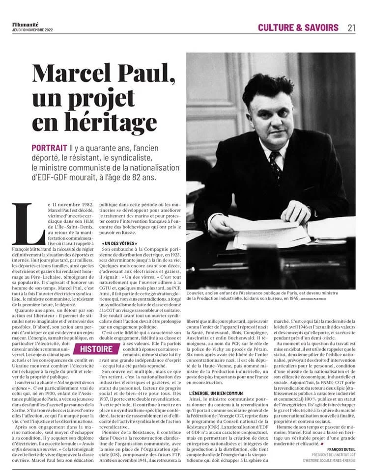

Publication d’archives
Marcel Paul, au-delà d’un nom de parking
Date indiquée par Facebook · 11 novembre 2022
Texte conservé avec la publication
Repères éditoriaux
Le 11 novembre, quarante ans après la mort de Marcel Paul, le message rappelle qu’à Niort son nom désigne un parking. Mais il renvoie surtout au déporté, au résistant, au syndicaliste et au ministre communiste de la nationalisation d’EDF-GDF. Le statut des électriciens et gaziers inscrit cette histoire dans le travail et les droits. En pleine crise énergétique, la publication oppose cet héritage aux choix de libéralisation. La mémoire devient ainsi une question de présent pour ses auteurs de 2022 : que fait-on de l’outil collectif et des garanties sociales construits après la Libération ?

Sources
Archive rouge · export Facebook · AR-0002-FB-01815
À lire aussi · 1941-2022 Hommage aux fusillés de Chateaubriant, de Nantes, et du Mont-Valérien